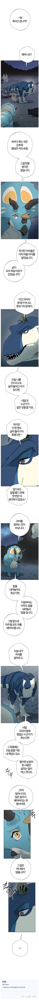
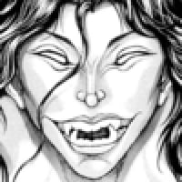

네이버 전통무협 웹툰에서 나오는 협의 기준 논쟁.jpg
댓글
광마회귀도 소설 웹툰 다 봄
절대회귀
관존 이강진
무벌전 추
군림천하도 추천함 근데 초반에 좀 뒤지게 답답해서 버텨야하는데 그부분만 참으면 존잼임
군림천하 개씨발 병신소설 추천 ㄴ 20년만에 완결 그따위로 쳐낼거면 걍 미완으로 남겨놧어야

트리케라톱스가 말하는 건 쉽지 않지. 보통의 경우엔 티라노가 현실적이고
상투, 삿갓은 왜 쓰고 있냐
그래야 무협웹툰임
다양성의 집합체인 인간한테 한가지의 답을 적용하려고 하는게 문제임
상황과 대상에 맞는 방법을 유연하게 써야지
삿갓 진자 킹받네 ㅋㅋㅋㅋㅋㅋ
버섯코인줄알았는데 삿갓이였네 ㅋㅋㅋㅋㅋㅋ
저거 쓰고 있으면 공룡들이 정체 못알아보는게 제일 열받음ㅋㅋㅋㅋㅋㅋ
뭨ㅋㅋㅋㅋㅋㅋㅋ
칼을 뽑은순간, 뒤끝이 남지 않도록 철저하게 끝내야지.
그렇게 못할거면 애초에 뽑지 말아야하고
목격자 까지 죽이면 "협" 이겟군
정통 무협툰인데 하필 사람이 아니라서
아니...왜...? 왜 공룡...?
킹룡무협이 아니었다면 죽이는것보단 주로 쓰는 팔 하나씩 가져가면 더 효과적일거 같긴 한데
다리가 안나유? 팔은 하나 없어도 거시기 한대 다리는 이거 하나 없으면 양팔이 거시기 허잖아유
너무 거시기하면 나중에 딴놈들이 괜히 지랄한당께유
내가 생각하는 한무중 협을 가장 잘 정의한건 좌백의 혈기린 외전의 나오는 이거인듯
〈협객불망원(俠客不忘怨, 원한을 잊지 않는다),
〈협객불상신(俠客不喪信, 협객은 믿음를 잃지 않는다),
〈협객불기의(俠客不棄義, 의를 버리지 않는다)〉
이런 바보들 불구로 만든 한명만 살려보내면 되잖아
네이버에 이런 웹툰이있었나?
그와중 '전'통무협은.. 언제부터 전통이었다고ㅋㅋㅋㅋ
팃포텟 전략이 체고인거시다
무림서부 봤으면 광마회귀 추천함
그리고 개인적으로 광마회귀는 웹툰보다 소설이 더 좋음
웹툰에서 생략된 묘사에 작가 철학이 너무 잘담겨있음